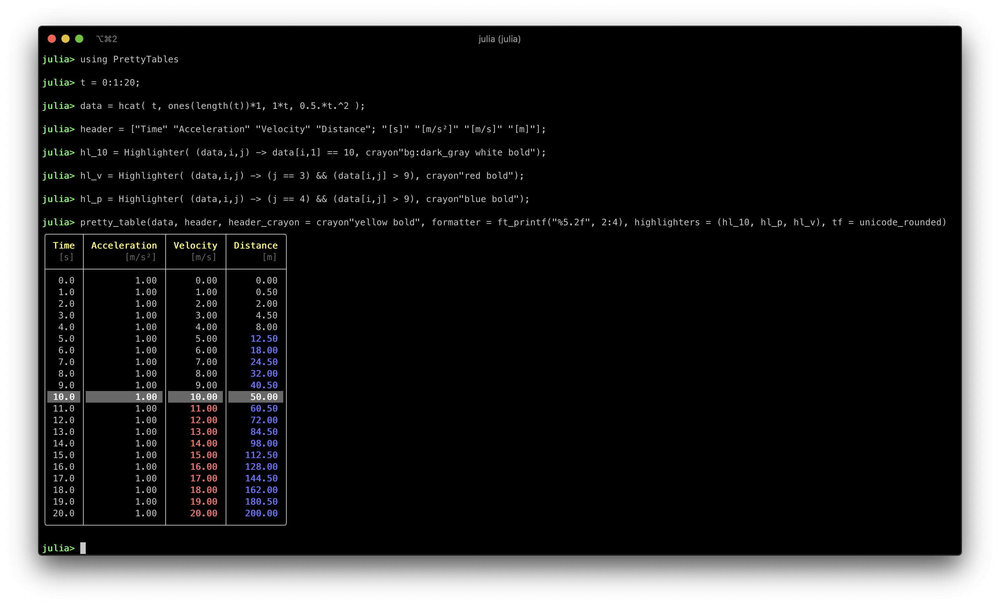

PrettyTables.jl
This package has the purpose to print data in matrices in a human-readable format. It was inspired in the functionality provided by ASCII Table Generator.

Requirements
- Julia >= 1.0
- Parameters >= 0.10.3
- Tables >= 0.1.14
Installation
julia> using Pkg
julia> Pkg.add("PrettyTables")